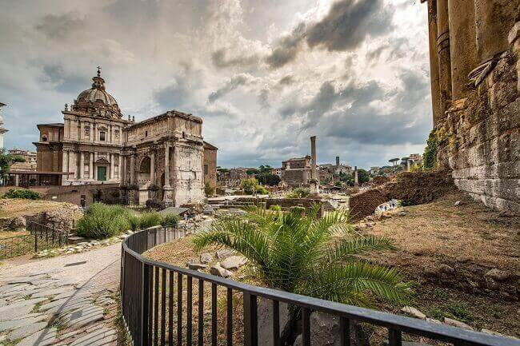
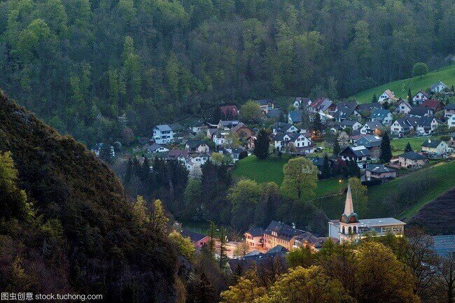

morly旅游圈
瑞士联邦（德语：Schweizerische Eidgenossenschaft，法语：Confédération suisse，意大利语：Confederazione Svizzera，罗曼什语：Confederaziun svizra），简称“瑞士”，是中欧国家之一，全国划分为26个州。瑞士北邻德国，西邻法国，南邻意大利，东邻奥地利和列支敦士登。全境以高原和山地为主，有“欧洲屋脊”之称。伯尔尼是联邦政府所在地。 瑞士历史上曾有雇佣兵制度，后来才改采武装中立。11世纪受神圣罗马帝国统治。 瑞士是其旅游资源丰富，有世界公园的美誉；其人均GDP一直居世界前列，在欧洲仅次于卢森堡。瑞士也是世界最为稳定的经济体之一。 其政策的长期性、安全的金融体系和银行的保密体制使瑞士成为避税投资者的安全避风港。由于拥有发达的金融产业，服务业在瑞士经济中也占有日益重要的地位。 2018年7月10日，世界知识产权组织和美国康奈尔大学等机构发布《2018全球创新指数报告》，瑞士排名第1位。
瑞士地理位置优越；瑞士的北边是德国，南边是意大利，西边是法国，东边是奥地利。如果想去国际大都市，喜欢购物和夜生活，那么建议你去日内瓦；如果你喜欢自然风光，建议你去因特拉肯，冬天可去滑雪，夏天可去徒步，你可以欣赏少女峰及两湖的美丽景色；当然你就想去老城休闲的漫步，建议你漫步卢塞恩，感受迷人的风光。
西庸城堡，位于瑞士莱蒙湖畔（也称日内瓦湖）的边境小城蒙特勒，与法国的依云小镇隔湖相望。城堡四周环湖，仿佛置身湖中小岛，以一座廊桥与岸边相连。 城堡内的中世纪古迹相当丰富，包括防御塔楼、军火库、公爵居所、纹章大厅、礼拜堂... 用通票换好门票后，可以领到中文手册，根据手册上的序号对应着沿途游览即可。除了庭院、酒窖、仓库、监狱、地下祈祷室、用刑室、文书院、议会楼、瞭望塔、巡廊、藏宝阁、城堡主塔等主要的建筑物和房间，城堡中还有很多中世纪的器物收藏。
Tips:
1,这里还是迪士尼动画《小美人鱼》的取景地，王子埃里克的海边城堡原型就是这里。
2,不要忘记在入口处的巨大柱子上搜寻一番，传说上面的字迹是拜伦留下的。不过，也有人说这并不是真迹，因为仅仅以上面所示的年代来看，也已经不是拜伦还在世的年代了。
3,地址：Avenue de Chillon 21,1820 Veytaux
4,开放时间：9：00-18：00（4月-9月）；9：30-17：00（10月-次年3月） 门票：凭瑞士通票游览免费
内容整理至网络，如有侵权，请联系我们！1255394075@qq.com
 